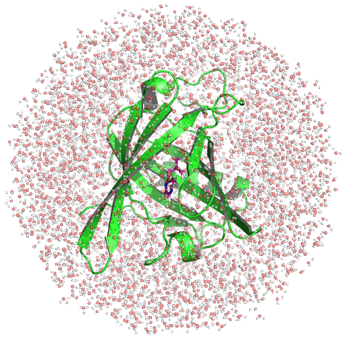

prz.pdb - the PDB structure of the small molecule PRZprotein.pdb - the PDB structure of the MUP-IBoth the protein and ligand have been protonated, and the protein atoms are in the AMBER naming scheme. The ligand is in its crystallographic pose. There is one cysteine bridge between residues 64 and 157, which have been labelled as CYX. You can read more about setting up structures here.
python2.7 $PROTOMSHOME/protoms.py -s sampling -p protein.pdb -l prz.pdb
which automatically solvated the system, and using GAFF, generated the forcefield and topolographic information of the ligand. By entering -s sampling , we are telling protoms.py that we wish to sample configurations of the system.
The solvated system should look like this:

The command file run_bnd.cmd was also generated by protoms.py; it summarises everything ProtoMS needs to know about running a simulation. At the bottom of run_bnd.cmd is
dump 100000 results write results dump 100000 pdb all solvent=all file=all.pdb standard dump 100000 restart write restart dump 100000 averages reset chunk equilibrate 5000000 solvent=784 protein=215 solute=1 volume=0 chunk simulate 40000000 solvent=784 protein=215 solute=1 volume=0
The lines starting with chunk tells ProtoMS what it should be sampling, and whether it should be recording data. The chunk equilibrate 5000000 means that while 5,000,000 sequential system configurations will be generated, data will not be recorded over this period. Following that, chunk simulate 40000000 means that 40,000,000 snap-shots will be generated, and that data will be recorded. This is the only difference between the equilibrate and simulate commands; they both sample the system, but only one can output data. The benefit of using equilibrate is that while the system is relaxing, the data is discarded without taking up any disk space. As chunk simulate comes after chunk equilibrate, the last frame from the equilibration run will be used as the start of the "simulate" chunk.
The lines starting with dump relate to chunk simulate, as they tell ProtoMS the frequency with which it will output the various files while it is simulating; these are the PDBs of the structures, the restart files, as well as the frequency with which cumlative averages (such as the total energy) will be reset.
As mentioned, there is one cysteine bridge in MUP-I. This needs to be constrained in ProtoMS as they are not yet properly coded for in ProtoMS. At the top of the chunk list, add
chunk fixresidues 1 64 157 chunk fixbackbone 1 63 65 156which will also constrain the residues immediately adjacent to the cysteine bridge.
$PROTOMSHOME/protoms3 run_bnd.cmdto simulate the system. This will use one processor and take at least 5 hours to complete.
run_bnd.cmd. This was done by changing chunk simulate 40000000 to chunk simulate 80000000 in run_bnd.cmd.
To view a movie of the simulation, you can use VMD:
vmd all.pdbAll there is to see is a lot of atoms wiggling and jiggling. What we're really interested in is how the energies of the system change as the simulation progresses. For instance, type
python2.7 $PROTOMSHOME/tools/calc_series.py -f results -s total inter/protein1-solvent/sum inter/solvent-solvent/sum inter/prz-solvent/sum -p subwhich, due to the
-s flag, will analyse the total energy (total), solvent-solvent interaction energy (inter/solvent-solvent/sum), protein-solvent interaction energy (inter/protein1-solvent/sum), and the ligand-solvent interaction energy (inter/prz-solvent/sum). The -p sub flag indicates we'd like the plots of energies printed as sub-plots, which, for our 80M move simulation look like dump commands in run_bnd), 700 snapshots correspond to 70M Monte Carlo moves.
What about equilibration? A necessary, but often insufficient, condition for equilibrium is
"A quantity is said to be at equilibrium if it does not change with time."
Therefore, it appears as if the system composed of water, MUP-I and the ligand PRZ does not reach equilibrium until around 70M moves. Will this energy drift affect free energy calculations? Some insight can be gained by looking at the plots of the other energies we produced, namely the protein-solvent interaction energy (yellow, bottom left). This quantity accounts for much for the decrease in the total energy. The solvent-solvent energy also appears, by eye, to also decrease with time. In contrast, the ligand-solvent energy appears roughly constant over the entirety of the simulation. Before reaching any conclusions about the equilibration of the ligand, let's have a look at the ligand-protein interaction energy. So that you can gain some experience with the interactive mode of calc_series, type
python2.7 $PROTOMSHOME/tools/calc_series.py -f resultsand, type
inter/protein1-prz1/sum and hit the enter key. (Note that you can analyse the Lennard-Jones (lj) and Coulomb (cou) energies separately.) This will produce the ligand-protein interaction energy. In our simulation, we find Like the ligand-solvent energy, this quantity appears to vary around a constant value.
We can also have a look at internal energies of the protein and ligand
python2.7 $PROTOMSHOME/tools/calc_series.py -f results -s intra/protein1/sum intra/prz/sum -p sub
The keen eyed among you would have noticed that one every plot is a verticle dashed line, and every time calc_series is called produces output like
Equilibration found at snapshot 543 for prz_sum, value=74.653 This production part is estimated to contain 20 uncorrelated samples (g=12.472) The number of samples is maximized at 485, g=13.850 and the number of uncorrelated samples is 22This occurs because calc_series is automatically trying to find when a quantity reaches equilibrium. The dashed verticle line and first line of the output are done via a hypothesis test on whether the line is "flat" or not. Data to the left of the dashed line is estimated to be "unequilibrated", and data to the right is estimated to be "equilibrated". By trying to maximise the number of uncorrelated samples, a second estimate of the equilibration point is also produced. While these tools were designed to determine the points of equilibria objectively, they sometimes disagree with human intuition. Have another look at the plots above and see if you agree with the algorithm as to where to equilibration point is.
make_gcmcbox.py and protoms.py created the following files:
water.pdb = the droplet of solvent water that surrounds the protein and ligandprotein_pms.pdb = the PDB structure of the protein in the ProtoMS naming schemeprz.tem = the forcefield template file of the ligand PRZ, which contains move informationrun_bnd.cmd = the command file that tells ProtoMS what to simulate and howprx_box.pdb = cubic box of water around the ligandprz.zmat = the z-matrix of the ligand, used to generate the ligand moves in Monte Carloprz.prepi = the AMBER prepi file of the ligand created by antechamberprz.frcmod = the AMBER frcmod file that is also created by antechamberprz.tem tells ProtoMS the partial charges and Lennard-Jones parameters for each atom in the ligand. It incorporates all the information present in prz.zmat, prz.prepi and prz.frcmod.
$PROTOMSHOME/tools. Here, we will set our simulation up from scratch.
python2.7 $PROTOMSHOME/tools/solvate.py -pr protein.pdb -g droplet -b $PROTOMSHOME/data/wbox_tip4p.pdb -o water.pdb
to make the sphere of solvent in water.pdb. The default radius of the sphere is 30 Å, which is fine in this case. A different radius can be specified by the -r flag.
It is important to consider that solvate.py, which is also called by protoms.py, adds water molecules randomly to the system based on a pre-equilibrated box of water. Water molecules that have been added but sterically clash with the protein or ligand are automatically removed. While this works okay in most situations, MUP-I has a very hydrophobic cavity, meaning that one should think very carefully about if and where one should add waters. With MUP-I, it is prudent to remove all the waters that have been added by solvate.py that are in the binding site. To do so, we will start by creating a box around the ligand that is at least 3 Å away from it
python2.7 $PROTOMSHOME/tools/make_gcmcbox.py -s prz.pdb -p 3 -o box.pdbcreating
box.pdb, which can be visualsed in a molecular viewer, such as VMD. Any water molecules in water.pdb that are inside box.pdb can be removed
python2.7 $PROTOMSHOME/tools/clear_gcmcbox.py -b box.pdb -s water.pdb -o water_clr.pdbcreating
water_clr.pdb.
To set-up the ligand from scratch, we use the GAFF forcefield and AMBERTOOLS. These are called via
python2.7 $PROTOMSHOME/tools/ambertools.py -f prz.pdb -c 0where
-c 0 tells AMBERTOOLS that PRZ has no net charge. This has created prz.prepi and prz.frcmod. To use these to generate the template file for ProtoMS, type
python2.7 $PROTOMSHOME/tools/build_template.py -n prz -p prz.prepi -f prz.frcmod -o prz.temwhich creates
prz.tem.
Before proceeding, the protein atom names have to be adapted to the ProtoMS convention. This is done with the command
python2.7 $PROTOMSHOME/tools/convertatomnames.py -p protein.pdb -c $PROTOMSHOME/data/atomnamesmap.datThe files above need to be reference by the ProtoMS command file, created using
python2.7 $PROTOMSHOME/tools/generate_input.py -p protein_pms.pdb -l prz.pdb -t prz.tem -pw water_clr.pdb -s sampling -o run_bnd.cmd --outfolder out_bnd --nprod 80000000 --nequil 5000000creating
run_bnd.cmd. Note that here we specify how long we want our equilibration and simulation time to be. If you recall, the data from the equilibration moves are not recorded. In the above, we specified that we want 5M moves of equilibration, and 80M moves for the production step. Given that it took roughly 70M moves for the total energy to equilibrate, if that were our quantity of interest, a much longer equilibration run would be necessary.
Finally, becuase there is a cysteine bridge in MUP-I, we need to add
chunk fixresidues 1 64 157 chunk fixbackbone 1 63 65 156to the top of the
chunk commands in run_bnd.cmd.
creating run_bnd.cmd.